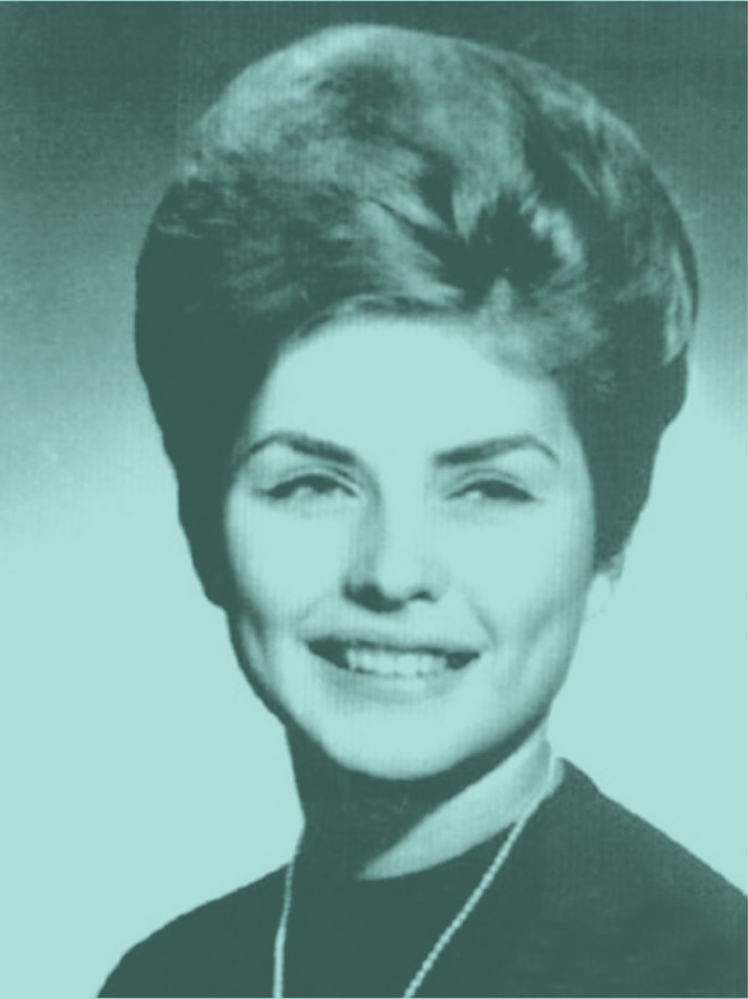
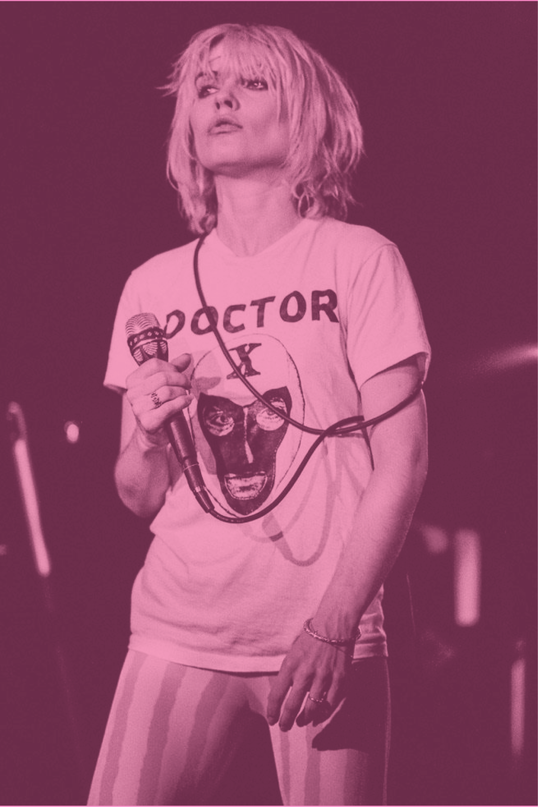

Atomic
Blondie
DEBBIE
HARRY
BIOGRAPHY
1945
1960s
1970s
1980s
1990s
2000s
July 1, 1945
Born Angela Trimble in Miami, Florida. Three months later she was adopted by Richard and Catherine Harry who renamed her.
1963
Graduated from Hawthorne Highschool in New Jersey.
Late 1960s
Moved to New York City.
1968
Joined The Wind in the Willows and sang back-up on their first album.
1974
Joined The Stilettoes with her friend Chris Stein. Later, the two left the band to form Angel and the Snake, which later became Blondie.
Mid 1970s
Blondie became a staple of Max’s Kansas City and CBGB, both live music venues in New York City.
1976
Blondie’s debut album had disappointing sales numbers, prompting the band to change record labels.
1978
The album Parallel Lines became a worldwide smash-hit, with the song “Heart of Glass” reaching #1 in the UK and the US.
1980
Debbie became friends with Andy Warhol and was immortalized in several of his pieces of artwork as his muse.
1981
Blondie split up due to the lack of success with their album and ticket sales, and
the sudden illness of member Chris Stein.
Harry released her first solo studio album, KooKoo, which reached relative success in the UK.
Late 1980s
Harry learned of her birth mother’s identity and attempted to contact her. Unfortunately, her birth mother refused any contact.
1997
Blondie reunited for the first time in 15 years. Their ensuing single reached #1 in the UK and 14 other countries leading to several more albums and tours for years to come.
Early 2000s
Harry became interested in charity work and began devoting herself to several charities. Some of those charities included those devoted to fighting cancer and endometriosis.
2014
Harry revealed herself to be bisexual and became a more prominent advocate for LGBT rights and visibility.
 